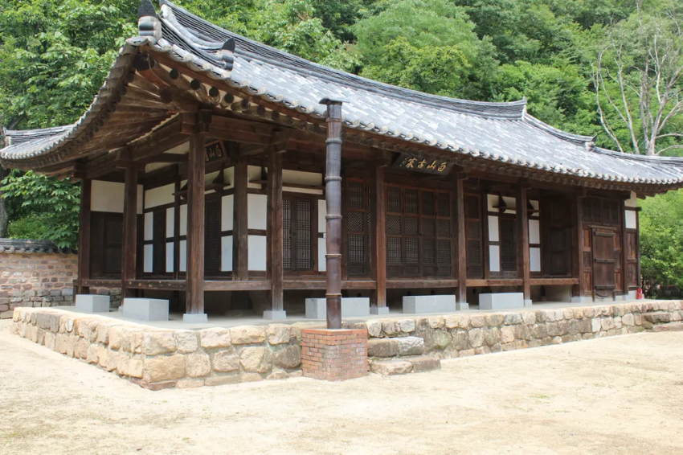

때는 1784년(정조 8년) 한양..
남대문시장 근처(지금은 창동) 초가집 동네에 유만주라는 서른 살 선비가 살고 있었음.
사육신 유응부를 배출한 뼈대 있는 명문가 자제였는데,
문제는 본인이 과거시험 볼 때마다 족족 미끄러지는 30세 무직 고시낭인이었다는 거임
직업도 없고 수입도 없는데
13년 동안 단 하루도 안 빼먹고 일기장 24권(흠영이란 책임)을 꽉 채운 조선판 헤비 블로거였음
덕분에 240년 뒤 후손들이 이 양반의 부동산 흑역사를 감상할 수 있게 되었으니..
잘했다고 볼수도 있을것이다
1784년 1월, 아버지 유한준의 관직이 오르면서 집안 살림이 좀 펴지기 시작함
(참고로 이 아부지가 나의 문화유산답사기의 서문으로 유명한 "사랑하면 알게 되고 알면 보이나니~" 명언 남긴 바로 그 문장가임 )

아부지는 아들한테 이제 초가집 벗어나서 적당한 데로 이사 가자고 오더를 내림
근데 방구석에서 글만 읽던 백수 아들은 기왕 한양 바닥 옮기는 거 개인 정원 딸린 번듯한 기와집에 꽂혀버리게 됨
이때부터 충무로(낙동), 남대문로(수서) 등 한양 도성 안을 샅샅이 뒤지고 다니는데, 당시 한양 집값도 미쳐 돌아가던 시절이었음
종로(입동) 대장주였던 이은 대감네 380칸 저택이 무려 2만 냥을 찍고 있었거든
(현대 시세로 100억짜리 정도)
현타가 세게 온 유만주는 7월 14일 일기장에 이런 말을 남김
"서울의 큰 재물은 다 집값에 들어가 있고, 시골의 큰 재물은 환곡에 들어가 있다더니 진짜 맞는 말이다."
눈은 높고 예산은 빡빡하니 보는 집마다 맘에 안 들어서 반년 넘게 계약을 못 함
그러자 당시 한양 부동산 중개업자였던 집주름(가쾌)이 어버버하는
유만주의 호구 냄새를 맡고 본격적인 작업에 들어감
이때 집주름이 쓴 수법이 요즘 부동산 떴다방이랑 똑같았음
1. 계약 성사 직전에 갑자기 집값 올려버리기
2. 이삿날까지 다 잡힌 거래 막판에 파투 내기
3. 멘탈 갈린 유만주한테 선비님이 그렇게 우유부단하게 간만 보니까 집을 못 사는 거임 ㅋㅋ 하고 자존심 긁기
7개월 동안 임장 지옥에 갇혀 있던 유만주는 이 패닉바잉 유도에 뇌가 마비됨
결국 원래 눈여겨보던 경희궁 근처 집을 포기하고,
집주름이 들이민 예산 초과 매물 명동 100칸짜리 기와집을 2,000냥에 질러버림
당시 2000냥이 어느 정도 돈이냐면
당시 쌀 3000말 = 8인 가족이 25년 동안 퍼먹을 수 있는 양식
유만주네 집안 125개월(약 10년 반) 치 생활비
한양 최고가 재벌 저택(2만 냥)의 딱 1/10 가격
유만주 본인 일기 피셜 "일생을 편히 누릴 수 있을 정도의 재산"
수입 0원인 서른 살 취준생한테 이 큰돈이 어딨겠음?
일단 친척들 쌈짓돈을 영혼까지 긁어모으고, 모자란 대부분의 금액은 강경 상인한테
연리 30%짜리 고금리 사채를 끌어다 풀레버리지로 꽂아버림 ㅋㅋㅋ
일처리 속도는 존나 빨랐음
7월 24일: 명동 집 계약 및 도면 확인
7월 25일: 집문서 교환 완료
7월 26일: 소식 들은 아부지 뒷목 잡고 미쳤냐 비싸다 당장 계약 취소해라!! 극대노
7월 28일: 응 안 물러~ 아부지 반대 씹고 이삿날 확정 박아버림
결국 8월 10일부터 12일까지 사흘 동안 친구한테 종까지 빌려다가 이삿짐 나르고 명동 100칸 기와집 입주에 성공함
입주 직후인 8월 24일 일기장을 보면 사계절 행복회로가 풀가동 중이었음
"봄에는 꽃놀이하기 좋고, 여름에는 피서하기 좋고, 가을에는 연꽃 보기 좋고, 겨울에는 파티 열기 딱 좋겠다 ㅎㅎ"
근데 기쁨도 잠시, 계약 끝나고 동네 시세를 알아보니 집주름한데
호구 잡혀서 주변 시세보다 고점 매수한 걸 뒤늦게 깨달음 ㅋㅋㅋ
일기장에도
"집 사는 일이 참 어렵구나. 다 이 따위면 누가 집 사려고 물어보겠냐"
부들부들 거리면서 써놓음 ㅋㅋㅋㅋ
그래도 존버하면 한양 핵심지 명동인데 오르지 않았을까?
어림도 없지 ㅋㅋ
유일한 믿을 구석이었던 아버지 유한준이 관직에서 파직당하는 대형 악재가 터짐
집안 자금도 끊기면서 연 30% 사채 이자와 유지비를 감당할 길이 사라지자,
결국 꿈에 그리던 명동 드림하우스 생활은 딱 1년 천하로 끝나버림
눈물의 매도를 친 유만주는 원래 살던 남대문 창동 초가집 동네로 도로 유턴하면서 조선판 영끌 신화는 막을 내림
세 줄 요약
1. 1784년 서른 살 무직 장수생이 복덕방 가스라이팅에 낚여 연 30% 사채 끼고 명동 100칸 기와집을 영끌 매수함
2. 아버지가 비싸다고 당장 취소하랬는데 씹고 입주했다가, 뒤늦게 시세보다 비싸게 호갱 당한 걸 알고 부들댐
3. 입주 1년 만에 아버지가 파직당하면서 이자 못 버티고 집 날린 뒤 원래 살던 초가집 동네로 강제 복귀함
댓글
수집 당시 댓글 76개
개댇지 · 11.10 19:58:26
ㅇㅇ · 11.10 19:58:28
· ㅇㅇ · 11.10 20:51:09
· ㅇㅇ · 11.10 21:00:47
· ㅇㅇ · 11.13 08:51:42
· ㅇㅇ · 11.13 09:43:02
· ㅇㅇ · 11.13 10:00:14
수류탄이야 · 11.10 19:58:39
ㅇㅇ · 11.10 20:00:21
ㅇㅇ · 11.10 20:00:26
· ㅇㅇ · 11.10 20:28:32
· ㅇㅇ · 11.10 20:30:25
· 인천폭주딸배 · 11.10 20:30:37
· ㅇㅇ · 11.13 09:34:47
· ㅇㅇ · 11.13 10:16:11
ㅇㅇ · 11.10 20:07:16
· 읍읍읍천읍천천 · 11.10 20:32:40
· ㅇㅇ · 11.13 08:44:51
· ㅇㅇ · 11.13 10:00:42
ㅇㅇ · 11.10 20:27:00
싱갤용 · 11.10 20:29:24
· ㅇㅇ · 11.13 08:48:48
· ㅇㅇ · 11.13 09:04:51
· ㅇㅇ · 11.13 09:05:40
· 식물빌런 · 11.13 09:06:37
· ㅁㄴㅇ · 11.13 09:41:55
· ㅇㅇ · 11.13 09:45:01
· ㅁㄴㅇ · 11.13 09:46:45
· ㅁㄴㅇ · 11.13 09:47:36
· ㅇㅇ · 11.13 17:29:06
ㅇㅇ · 11.10 20:32:24
분탕용깡계 · 11.10 20:37:23
ㅇㅇ · 11.10 20:54:45
매개완 · 11.11 04:37:59
ㅇㅇ · 11.13 08:43:37
· 알카 · 11.13 14:31:26
ㅇㅇ · 11.13 08:47:25
복덕방 이 미친놈들
ㅇㅇ · 11.13 08:52:42
ㅇㅇ · 11.13 08:54:08
· ㅇㅇ · 11.13 08:54:56
· 반선족 · 11.13 09:22:23
· ㅇㅇ · 11.13 09:37:19
· ㅇㅇ · 11.13 10:05:18
· ㅇㅇ · 11.13 10:08:26
카야조아 · 11.13 08:58:01
ㅇㅇ · 11.13 08:58:43
ㅇㅇ · 11.13 09:01:04
· ㅇㅇ · 11.13 09:44:39
ㅇㅇ · 11.13 09:01:43
논두렁엔딩 · 11.13 09:01:50
ㅇㅇ · 11.13 09:02:17
ㅇㅇ · 11.13 09:04:13
· ㅇㅇ · 11.13 09:09:10
· ㅇㅇ · 11.13 09:24:49
· ㅁㄴㅇ · 11.13 09:44:38
· ㅇㅇ · 11.13 09:49:38
· ㅇㅇ · 11.13 11:08:29
ㅇㅇ · 11.13 09:18:29
· ㅇㅇ · 11.13 09:39:38
ㅇㅇ · 11.13 09:30:19
· ㅇㅇ · 11.13 10:13:47
· ㅇㅇ · 11.13 10:16:51
· ㅇㅇ · 11.13 10:35:55
· ㅇㅇ · 11.13 10:36:05
· ㅇㅇ · 11.13 10:37:27
ㅇㅇ · 11.13 10:02:56
ㅇㅇ · 11.13 10:44:18
· ㅇㅇ · 11.13 11:07:17
카루짱 · 11.13 11:00:13
ㅇㅇ · 11.13 12:01:33
ㅇㅇ · 11.13 12:02:56
ㅇㅇ · 11.13 13:03:49
ㅇㅇ · 11.13 13:12:30
ㅇㅇ · 11.13 13:37:49
ㅇㅇ · 11.13 15:28:48
ㅇㅇ · 11.13 15:37:24